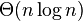
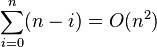
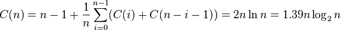
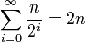
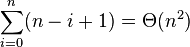

快速排序[]
 使用快速排序法对一列数字进行排序的过程
|
|
| 分类 | 排序算法 |
|---|---|
| 数据结构 | 不定 |
| 最差时间复杂度 | |
| 最优时间复杂度 |  |
| 平均时间复杂度 | |
| 最差空间复杂度 | 根据实现的方式不同而不同 |
|
|
快速排序是由东尼·霍尔所发展的一种排序算法。在平均状况下，排序n个项目要Ο(n log n)次比较。在最坏状况下则需要Ο(n2)次比较，但这种状况并不常见。事实上，快速排序通常明显比其他Ο(n log n)算法更快，因为它的内部循环（inner loop）可以在大部分的架构上很有效率地被实现出来。
目录
[]- 1 算法
- 1.1 原地（in-place）分区的版本
- 2 优化的排序算法
- 3 正规分析
- 3.1 乱数快速排序的期望复杂度
- 3.2 平均复杂度
- 3.3 空间复杂度
- 4 选择的关连性
- 5 实现示例
- 5.1 go
- 5.2 scheme
- 5.3 Common Lisp
- 5.4 L
- 5.5 C++（迭代版本）
- 5.6 C
- 5.7 Erlang
- 5.8 Java
- 5.9 Perl
- 5.10 Python
- 5.11 Joy
- 5.12 PHP
- 5.13 PHP Another
- 5.14 Haskell
- 5.15 Prolog
- 5.16 Ruby
- 5.17 SML
- 5.18 Pascal
- 5.19 C#
- 5.20 VB.Net
- 5.21 ActionScript
- 5.22 JavaScript
- 6 外部链接
- 7 参考
- 8 脚注
算法[]

快速排序使用分治法（Divide and conquer）策略来把一个序列（list）分为两个子序列（sub-lists）。
步骤为：
- 从数列中挑出一个元素，称为"基准"（pivot），
- 重新排序数列，所有元素比基准值小的摆放在基准前面，所有元素比基准值大的摆在基准的后面（相同的数可以到任一边）。在这个分区退出之后，该基准就处于数列的中间位置。这个称为分区（partition）操作。
- 递归地（recursive）把小于基准值元素的子数列和大于基准值元素的子数列排序。
递归的最底部情形，是数列的大小是零或一，也就是永远都已经被排序好了。虽然一直递归下去，但是这个算法总会退出，因为在每次的迭代（iteration）中，它至少会把一个元素摆到它最后的位置去。
在简单的伪代码中，此算法可以被表示为：
function quicksort(q)
var list less, pivotList, greater
if length(q) ≤ 1 {
return q
} else {
select a pivot value pivot from q
for each x in q except the pivot element
if x < pivot then add x to less
if x ≥ pivot then add x to greater
add pivot to pivotList
return concatenate(quicksort(less), pivotList, quicksort(greater))
}
原地（in-place）分区的版本[]
上面简单版本的缺点是，它需要Ω(n)的额外存储空间，也就跟归并排序一样不好。额外需要的存储器空间配置，在实际上的实现，也会极度影响速度和缓存的性能。有一个比较复杂使用原地（in-place）分区算法的版本，且在好的基准选择上，平均可以达到O(log n)空间的使用复杂度。
function partition(a, left, right, pivotIndex)
pivotValue := a[pivotIndex]
swap(a[pivotIndex], a[right]) // 把pivot移到結尾
storeIndex := left
for i from left to right-1
if a[i] <＝ pivotValue
swap(a[storeIndex], a[i])
storeIndex := storeIndex + 1
swap(a[right], a[storeIndex]) // 把pivot移到它最後的地方
return storeIndex
这是原地分区算法，它分区了标示为"左边（left）"和"右边（right）"的序列部分，借由移动小于a[pivotIndex]的所有元素到子序列的开头，留下所有大于或等于的元素接在他们后面。在这个过程它也为基准元素找寻最后摆放的位置，也就是它回传的值。它暂时地把基准元素移到子序列的结尾，而不会被前述方式影响到。由于算法只使用交换，因此最后的数列与原先的数列拥有一样的元素。要注意的是，一个元素在到达它的最后位置前，可能会被交换很多次。
一旦我们有了这个分区算法，要写快速排列本身就很容易：
procedure quicksort(a, left, right)
if right > left
select a pivot value a[pivotIndex]
pivotNewIndex := partition(a, left, right, pivotIndex)
quicksort(a, left, pivotNewIndex-1)
quicksort(a, pivotNewIndex+1, right)
这个版本经常会被使用在命令式语言中，像是C语言。
优化的排序算法[]
快速排序是二叉查找树（二叉查找树）的一个空间优化版本。不是循序地把数据项插入到一个明确的树中，而是由快速排序组织这些数据项到一个由递归调用所隐含的树中。这两个算法完全地产生相同的比较次数，但是顺序不同。对于排序算法的稳定性指标，原地分区版本的快速排序算法是不稳定的。其他变种是可以通过牺牲性能和空间来维护稳定性的。
快速排序的最直接竞争者是堆排序（Heapsort）。堆排序通常比快速排序稍微慢，但是最坏情况的运行时间总是O(n log n)。快速排序是经常比较快，除了introsort变化版本外，仍然有最坏情况性能的机会。如果事先知道堆排序将会是需要使用的，那么直接地使用堆排序比等待introsort再切换到它还要快。堆排序也拥有重要的特点，仅使用固定额外的空间（堆排序是原地排序），而即使是最佳的快速排序变化版本也需要Θ(log n)的空间。然而，堆排序需要有效率的随机存取才能变成可行。
快速排序也与归并排序（Mergesort）竞争，这是另外一种递归排序算法，但有坏情况O(n log n)运行时间的优势。不像快速排序或堆排序，归并排序是一个稳定排序，且可以轻易地被采用在链表（linked list）和存储在慢速访问媒体上像是磁盘存储或网络连接存储的非常巨大数列。尽管快速排序可以被重新改写使用在炼串列上，但是它通常会因为无法随机存取而导致差的基准选择。归并排序的主要缺点，是在最佳情况下需要Ω(n)额外的空间。
正规分析[]
从一开始快速排序平均需要花费O(n log n)时间的描述并不明显。但是不难观察到的是分区运算，数组的元素都会在每次循环中走访过一次，使用O(n)的时间。在使用结合（concatenation）的版本中，这项运算也是O(n)。
在最好的情况，每次我们运行一次分区，我们会把一个数列分为两个几近相等的片段。这个意思就是每次递归调用处理一半大小的数列。因此，在到达大小为一的数列前，我们只要作log n次嵌套的调用。这个意思就是调用树的深度是O(log n)。但是在同一层次结构的两个程序调用中，不会处理到原来数列的相同部分；因此，程序调用的每一层次结构总共全部仅需要O(n)的时间（每个调用有某些共同的额外耗费，但是因为在每一层次结构仅仅只有O(n)个调用，这些被归纳在O(n)系数中）。结果是这个算法仅需使用O(n log n)时间。
另外一个方法是为T(n)设立一个递归关系式，也就是需要排序大小为n的数列所需要的时间。在最好的情况下，因为一个单独的快速排序调用牵涉了O(n)的工作，加上对n/2大小之数列的两个递归调用，这个关系式可以是：
- T(n) = O(n) + 2T(n/2)
解决这种关系式型态的标准数学归纳法技巧告诉我们T(n) = O(n log n)。
事实上，并不需要把数列如此精确地分区；即使如果每个基准值将元素分开为99%在一边和1%在另一边，调用的深度仍然限制在100log n，所以全部运行时间依然是O(n log n)。
然而，在最坏的情况是，两子数列拥有大各为1和n-1，且调用树（call tree）变成为一个n个嵌套（nested）调用的线性连串（chain）。第i次调用作了O(n-i)的工作量，且递归关系式为：
- T(n) = O(n) + T(1) + T(n - 1) = O(n) + T(n - 1)
这与插入排序和选择排序有相同的关系式，以及它被解为T(n) = O(n2)。
乱数快速排序的期望复杂度[]
乱数快速排序有一个值得注意的特性，在任意输入数据的状况下，它只需要O(n log n)的期望时间。是什么让随机的基准变成一个好的选择？
假设我们排序一个数列，然后把它分为四个部分。在中央的两个部分将会包含最好的基准值；他们的每一个至少都会比25%的元素大，且至少比25%的元素小。如果我们可以一致地从这两个中央的部分选出一个元素，在到达大小为1的数列前，我们可能最多仅需要把数列分区2log2 n次，产生一个O(nlogn)算法。
不幸地，乱数选择只有一半的时间会从中间的部分选择。出人意外的事实是这样就已经足够好了。想像你正在翻转一枚硬币，一直翻转一直到有k次人头那面出现。尽管这需要很长的时间，平均来说只需要2k次翻动。且在100k次翻动中得不到k次人头那面的机会，是像天文数字一样的非常小。借由同样的论证，快速排序的递归平均只要2(2log2 n)的调用深度就会终止。但是如果它的平均调用深度是O(log n)且每一阶的调用树状过程最多有n个元素，则全部完成的工作量平均上是乘积，也就是O(n log n)。
平均复杂度[]
即使如果我们无法随机地选择基准数值，对于它的输入之所有可能排列，快速排序仍然只需要O(n log n)时间。因为这个平均是简单地将输入之所有可能排列的时间加总起来，除以n这个因数，相当于从输入之中选择一个随机的排列。当我们这样作，基准值本质上就是随机的，导致这个算法与乱数快速排序有一样的运行时间。
更精确地说，对于输入顺序之所有排列情形的平均比较次数，可以借由解出这个递归关系式可以精确地算出来。
。
在这里，n-1是分区所使用的比较次数。因为基准值是相当均匀地落在排列好的数列次序之任何地方，总和就是所有可能分区的平均。
这个意思是，平均上快速排序比理想的比较次数，也就是最好情况下，只大约比较糟39%。这意味着，它比最坏情况较接近最好情况。这个快速的平均运行时间，是快速排序比其他排序算法有实际的优势之另一个原因。
空间复杂度[]
被快速排序所使用的空间，依照使用的版本而定。使用原地（in-place）分区的快速排序版本，在任何递归调用前，仅会使用固定的額外空間。然而，如果需要产生O(log n)嵌套递归调用，它需要在他们每一个存储一个固定数量的信息。因为最好的情况最多需要O(log n)次的嵌套递归调用，所以它需要O(log n)的空间。最坏情况下需要O(n)次嵌套递归调用，因此需要O(n)的空间。
然而我们在这里省略一些小的细节。如果我们考虑排序任意很长的数列，我们必须要记住我们的变数像是left和right，不再被认为是占据固定的空间；也需要O(log n)对原来一个n项的数列作索引。因为我们在每一个堆栈框架中都有像这些的变数，实际上快速排序在最好跟平均的情况下，需要O(log2 n)空间的比特数，以及最坏情况下O(n log n)的空间。然而，这并不会太可怕，因为如果一个数列大部分都是不同的元素，那么数列本身也会占据O(n log n)的空间字节。
非原地版本的快速排序，在它的任何递归调用前需要使用O(n)空间。在最好的情况下，它的空间仍然限制在O(n)，因为递归的每一阶中，使用与上一次所使用最多空间的一半，且
- 。
它的最坏情况是很恐怖的，需要
- 
空间，远比数列本身还多。如果这些数列元素本身自己不是固定的大小，这个问题会变得更大；举例来说，如果数列元素的大部分都是不同的，每一个将会需要大约O(log n)为原来存储，导致最好情况是O(n log n)和最坏情况是O(n2 log n)的空间需求。
选择的关连性[]
选择算法（selection algorithm）可以选取一个数列的第k个最小值；一般而言这是比排序还简单的问题。一个简单但是有效率的选择算法与快速排序的作法相当类似，除了对两个子数列都作递归调用外，它仅仅针对包含想要的元素之子数列作单一的结尾递归（tail recursive）调用。这个小改变降低了平均复杂度到线性或是Θ(n)时间，且让它成为一个原地算法。这个算法的一种变化版本，可以让最坏情况下降为O(n)（参考选择算法来得到更多信息）。
相反地，一旦我们知道一个最坏情况的O(n)选择算法是可以利用的，我们在快速排序的每一步可以用它来找到理想的基准（中位数），得到一种最坏情况下O(n log n)运行时间的变化版本。然而在实际的实现中，这种版本一般而言相当慢。
实现示例[]
于此我们展示在数种语言下的几个快速排序实现。我们在此仅展示出最普遍或独特的一些；针对其他的实现，参见快速排序实现条目。
go[]
func qsort(data []int) { if len(data) <= 1 { return } mid, i := data[0], 1 head, tail := 0, len(data)-1 for head < tail { if data[i] > mid { data[i], data[tail] = data[tail], data[i] tail-- } else { data[i], data[head] = data[head], data[i] head++ i++ } } data[head] = mid qsort(data[:head]) qsort(data[head+1:]) }
scheme[]
#lang racket ;;快速排序 (define quick-sort (λ (s) (if (< (length s) 2) s (append (quick-sort (filter (λ (e) (< e (last s))) s)) (filter (λ (e) (= e (last s))) s) (quick-sort (filter (λ (e) (> e (last s))) s))))))
Common Lisp[]
(defun filter-< (lst pivot) (remove-if-not (lambda (x) (< x pivot)) lst)) (defun quick-sort (lst) (if (null (cdr lst)) lst (let ((pivot (car lst)) (else (cdr lst))) (append (quick-sort (filter-< else pivot)) (list pivot) (quick-sort (set-difference else (filter-< else pivot)))))))
L[]
; 完整的快速排序實現，包含全部依賴關係 ; 合併兩個列表 (append [1 2] [3 4]) -> [1 2 3 4] (def append (lambda [x y] (cond [(eq x []) y] [#true (cons (car x) (*lambda* (cdr x) y))] ))) ; 規約 ; (reduce (lambda [a b] (mul a b)) [1 2 3 4 5]) -> 5 (def reduce (lambda [Fn L] (cond [(not-eq L []) ((lambda [n Fn L] (cond [(eq L []) n] [#true (*lambda* (Fn n (car L)) Fn (cdr L))] )) (car L) Fn (cdr L))] ))) ; 合併任意多個列表 (appendn [1 2] [3 4] [5 6] [7 8]) -> [1 2 3 4 5 6 7 8] (def appendn (lambda [] (reduce append *args*))) ; 過濾，取L中元素依次作為Fn的參數，只在Fn返回#true時保留元素 ; (filter (lambda [x] (> x 1800)) [322 629 753 1225 1707 1818 1939 3383 3639 3875]) -> ; [1818 1939 3383 3639 3875] (def filter (lambda [Fn L] (cond [(eq L []) []] [(eq (Fn (car L)) #true) (cons (car L) (*lambda* Fn (cdr L)))] [#true (*lambda* Fn (cdr L))] ))) ; 比較，若干名字定義 (def ge (lambda [a b] (not (lt a b)))) (def le (lambda [a b] (not (gt a b)))) (def not-eq (lambda [a b] (not (eq a b)))) (def < lt) (def > gt) (def >= ge) (def <= le) ; 自增，即加1 (def inc (lambda [x] (add x 1))) ; 求列表長度 (def length (lambda [L] ((lambda [count L] (cond [(eq L []) count] [#true (*lambda* (inc count) (cdr L))] )) 0 L) )) ; 通用快速排序實現，Fn作用于L中的元素，並返回用於排序的值 ; 對於 (qsort0 [[2 23] [1 43] [5 23] [4 21] [3 54]] (lambda [E] (car E))) ; 取其中一項為[2 23] ; 求((lambda [E] (car E)) [2 23]) -> 2 ; 依此類推 ; 最終結果為 [[1 43] [2 23] [3 54] [4 21] [5 23]] (def qsort0 (lambda [L Fn] (cond [(<= (length L) 1) L] [#true (appendn (*lambda* (filter (lambda [i] (< (Fn i) (Fn (car L)))) (cdr L)) Fn) [(car L)] (*lambda* (filter (lambda [i] (>= (Fn i) (Fn (car L)))) (cdr L)) Fn) )] ))) ; 常函數 (def const (lambda [n] n)) ; 對於數列的快速排序, 對於[2 3 4 ...]，取其中元素2，帶入常函數(const 2)仍得2，以此排序 ; (qsort-number [1818 3875 1225 753 3383 1707 3639 1939 322 629]) -> ; [322 629 753 1225 1707 1818 1939 3383 3639 3875] (def qsort-number (lambda [L] (qsort0 L const))) ; 合併所有中間定義，僅僅使用元算子，得到 (lambda [L] ((lambda [L Fn] (cond [((lambda [a b] (not (gt a b))) ((lambda [L] ((lambda [count L] (cond [(eq L []) count] [#true (*lambda* ((lambda [x] ((lambda [] ((lambda [Fn L] (cond [((lambda [a b] (not (eq a b))) L []) ((lambda [n Fn L] (cond [(eq L []) n] [#true (*lambda* (Fn n (car L)) Fn (cdr L))])) (car L) Fn (cdr L))])) add *args*)) x 1)) count) (cdr L))])) 0 L)) L) 1) L] [#true ((lambda [] ((lambda [Fn L] (cond [((lambda [a b] (not (eq a b))) L []) ((lambda [n Fn L] (cond [(eq L []) n] [#true (*lambda* (Fn n (car L)) Fn (cdr L))])) (car L) Fn (cdr L))])) (lambda [x y] (cond [(eq x []) y] [#true (cons (car x) (*lambda* (cdr x) y))])) *args*)) (*lambda* ((lambda [Fn L] (cond [(eq L []) []] [(eq (Fn (car L)) #true) (cons (car L) (*lambda* Fn (cdr L)))] [#true (*lambda* Fn (cdr L))])) (lambda [i] (lt (Fn i) (Fn (car L)))) (cdr L)) Fn) [(car L)] (*lambda* ((lambda [Fn L] (cond [(eq L []) []] [(eq (Fn (car L)) #true) (cons (car L) (*lambda* Fn (cdr L)))] [#true (*lambda* Fn (cdr L))])) (lambda [i] ((lambda [a b] (not (lt a b))) (Fn i) (Fn (car L)))) (cdr L)) Fn))])) L (lambda [n] n))) ; 以上就是對於數列的快速排序算法的完整實現
C++（迭代版本）[]
//参考：http://www.dutor.net/index.php/2011/04/recursive-iterative-quick-sort/ struct Range{ explicit Range(int s=0,int e=0):start(s),end(e){} int start,end; }; void quicksort(int n,int arr[]){ if(n<=0) return; stack<Range> st; st.push(Range(0,n-1)); while(!st.empty()){ Range range = st.top(); st.pop(); int pivot = arr[range.end]; int pos = range.start-1; for(int i=range.start;i<range.end;++i){ if(arr[i]<pivot){ std::swap(arr[i],arr[++pos]); } } std::swap(arr[++pos],arr[range.end]); if(pos-1>range.start){ st.push(Range(range.start,pos-1)); } if(pos+1<range.end){ st.push(Range(pos+1,range.end)); } } }
C[]
#include <stdio.h> #include <stddef.h> void swap(int * a, int * b) { int tmp = * a; * a = * b; * b = tmp; } size_t partition(int * ary, size_t len, size_t pivot_i) { size_t i = 0; size_t small_len = pivot_i; int pivot = ary[pivot_i]; swap(&ary[pivot_i], &ary[pivot_i + (len - 1)]); for (; i < len; i++) { if (ary[pivot_i + i] < pivot) { swap(&ary[pivot_i + i], &ary[small_len]); small_len++; } } swap(&ary[pivot_i + (len - 1)], &ary[small_len]); return small_len; } void quick_sort(int * ary, size_t len) { if (len == 0 || len == 1) return; size_t small_len = partition(ary, len, 0); quick_sort(ary, small_len); quick_sort(&ary[small_len + 1], len - small_len - 1); } int main(void) { int ary[] = {2,4,2,5,3,5,3,1,7,6}; size_t len = sizeof(ary) / sizeof(ary[0]); quick_sort(ary, len); return 0; }
C89标准在stdlib.h中定义了抽象数据类型的快速排序函数qsort(3)。
#include <stdio.h> #include <stdlib.h> static int cmp(const void *a, const void *b) { return *(int *)a - *(int *)b; } int main() { int arr[10]={5, 3, 7, 4, 1, 9, 8, 6, 2,10}; qsort(arr, 10, sizeof(int), cmp); return 0; }
#include <functional> #include <algorithm> #include <iterator> template< typename BidirectionalIterator, typename Compare > void quick_sort( BidirectionalIterator first, BidirectionalIterator last, Compare cmp ) { if( first != last ) { BidirectionalIterator left = first; BidirectionalIterator right = last; BidirectionalIterator pivot = left++; while( left != right ) { if( cmp( *left, *pivot ) ) { ++left; } else { while( (left != right) && cmp( *pivot, *right ) ) right--; std::iter_swap( left, right ); } } if (cmp( *pivot, *left )) --left; std::iter_swap( first, left ); quick_sort( first, left, cmp ); quick_sort( right, last, cmp ); } } template< typename BidirectionalIterator > inline void quick_sort( BidirectionalIterator first, BidirectionalIterator last ) { quick_sort( first, last, std::less_equal< typename std::iterator_traits< BidirectionalIterator >::value_type >() ); }
未使用STL的快速排序版本。
#include <utility> using std::swap; int partition(int* array, int left, int right) { int index = left; int pivot = array[index]; swap(array[index], array[right]); for (int i=left; i<right; i++) { if (array[i] > pivot) // 降序 swap(array[index++], array[i]); } swap(array[right], array[index]); return index; } void qsort(int* array, int left, int right) { if (left >= right) return; int index = partition(array, left, right); qsort(array, left, index - 1); qsort(array, index + 1, right); }
Erlang[]
qsort([]) -> []; qsort([Head|Rest]) -> qsort([X || X <-Rest, X<Head]) ++ [Head] ++ qsort([X || X <-Rest, X>=Head]).
Java[]
import java.util.Comparator; import java.util.Random; public class Quicksort { public static final Random RND = new Random(); private static void swap(Object[] array, int i, int j) { Object tmp = array[i]; array[i] = array[j]; array[j] = tmp; } private static <E> int partition(E[] array, int begin, int end, Comparator<? super E> cmp) { int index = begin + RND.nextInt(end - begin + 1); E pivot = array[index]; swap(array, index, end); for (int i = index = begin; i < end; ++ i) { if (cmp.compare(array[i], pivot) <= 0) { swap(array, index++, i); } } swap(array, index, end); return (index); } private static <E> void qsort(E[] array, int begin, int end, Comparator<? super E> cmp) { if (end > begin) { int index = partition(array, begin, end, cmp); qsort(array, begin, index - 1, cmp); qsort(array, index + 1, end, cmp); } } public static <E> void sort(E[] array, Comparator<? super E> cmp) { qsort(array, 0, array.length - 1, cmp); } } /* * more efficient implements for quicksort. <br /> * use left, center and right median value (@see #median()) for the pivot, and * the more efficient inner loop for the core of the algorithm. */ class Sort { public static final int CUTOFF = 11; /** * quick sort algorithm. <br /> * * @param arr an array of Comparable items. <br /> */ public static <T extends Comparable<? super T>> void quicksort( T[] arr ) { quickSort( arr, 0, arr.length - 1 ); } /** * get the median of the left, center and right. <br /> * order these and hide the pivot by put it the end of * of the array. <br /> * * @param arr an array of Comparable items. <br /> * @param left the most-left index of the subarray. <br /> * @param right the most-right index of the subarray.<br /> * @return T */ public static <T extends Comparable<? super T>> T median( T[] arr, int left, int right ) { int center = ( left + right ) / 2; if ( arr[left].compareTo( arr[center] ) > 0 ) swapRef( arr, left, center ); if ( arr[left].compareTo( arr[right] ) > 0 ) swapRef( arr, left, right ); if ( arr[center].compareTo( arr[right] ) > 0 ) swapRef( arr, center, right ); swapRef( arr, center, right - 1 ); return arr[ right - 1 ]; } /** * internal method to sort the array with quick sort algorithm. <br /> * * @param arr an array of Comparable Items. <br /> * @param left the left-most index of the subarray. <br /> * @param right the right-most index of the subarray. <br /> */ private static <T extends Comparable<? super T>> void quickSort( T[] arr, int left, int right ) { if ( left + CUTOFF <= right ) { //find the pivot T pivot = median( arr, left, right ); //start partitioning int i = left, j = right - 1; for ( ; ; ) { while ( arr[++i].compareTo( pivot ) < 0 ) ; while ( arr[--j].compareTo( pivot ) > 0 ) ; if ( i < j ) swapRef( arr, i, j ); else break; } //swap the pivot reference back to the small collection. swapRef( arr, i, right - 1 ); quickSort( arr, left, i - 1 ); //sort the small collection. quickSort( arr, i + 1, right ); //sort the large collection. } else { //if the total number is less than CUTOFF we use insertion sort instead (cause it much more efficient). insertionSort( arr, left, right ); } } /** * method to swap references in an array.<br /> * * @param arr an array of Objects. <br /> * @param idx1 the index of the first element. <br /> * @param idx2 the index of the second element. <br /> */ public static <T> void swapRef( T[] arr, int idx1, int idx2 ) { T tmp = arr[idx1]; arr[idx1] = arr[idx2]; arr[idx2] = tmp; } /** * method to sort an subarray from start to end * with insertion sort algorithm. <br /> * * @param arr an array of Comparable items. <br /> * @param start the begining position. <br /> * @param end the end position. <br /> */ public static <T extends Comparable<? super T>> void insertionSort( T[] arr, int start, int end ) { int i; for ( int j = start + 1; j <= end; j++ ) { T tmp = arr[j]; for ( i = j; i > start && tmp.compareTo( arr[i - 1] ) < 0; i-- ) { arr[ i ] = arr[ i - 1 ]; } arr[ i ] = tmp; } } }
Perl[]
sub qsort { return () unless @_; (qsort(grep { $_ < $_[0] } @_[1..$#_]), $_[0], qsort(grep { $_ >= $_[0] } @_[1..$#_])); }
Python[]
def qsort(arr): if len(arr) <= 1: return arr else: pivot = arr[0] return qsort([x for x in arr[1:] if x < pivot]) + \ [pivot] + \ qsort([x for x in arr[1:] if x >= pivot])
Joy[]
DEFINE sort == [small][]
[uncons [>] split]
[[swap] dip cons concat] binrec .
PHP[]
function quicksort($seq) { if (count($seq) > 1) { $k = $seq[0]; $x = array(); $y = array(); $_size = count($seq); //do not use count($seq) in loop for. for ($i=1; $i<$_size; $i++) { if ($seq[$i] <= $k) { $x[] = $seq[$i]; } else { $y[] = $seq[$i]; } } $x = quicksort($x); $y = quicksort($y); return array_merge($x, array($k), $y); } else { return $seq; } }
PHP Another[]
$list = array(85, 24, 63, 45,55, 17, 31, 96, 50); print_r(qsort($list)); function qsort($arr) { $len = count($arr); if($len <=1 ) return $arr; $left = $right = array(); $mid_index = floor($len/2); $mid_value = $arr[$mid_index]; for($i=0;$i<$len;$i++){ if($i==$mid_index)continue; //seperate elements by 'mid_value' if($arr[$i] < $mid_value){ $left[] = $arr[$i]; }else{ $right[] = $arr[$i]; } } return array_merge(qsort($left),(array)$mid_value,qsort($right)); } #######output######### #Array ( [0] => 17 [1] => 24 [2] => 31 [3] => 45 [4] => 50 [5] => 55 [6] => 63 [7] => 85 [8] => 96 )
Haskell[]
sort :: (Ord a) = > [a] -> [a] sort [] = [] sort (pivot:rest) = sort [y | y <- rest, y < pivot] ++ [pivot] ++ sort [y | y <- rest, y >=pivot]
Prolog[]
split(H, [A|X], [A|Y], Z) :- order(A, H), split(H, X, Y, Z). split(H, [A|X], Y, [A|Z]) :- not(order(A, H)), split(H, X, Y, Z). split(_, [], [], []). quicksort([], X, X). quicksort([H|T], S, X) :- split(H, T, A, B), quicksort(A, S, [H|Y]), quicksort(B, Y, X).
Ruby[]
def sort(array) # return [] if array.empty? return array if array.size < 2 left, right = array[1..-1].partition { |y| y <= array.first } sort(left) + [ array.first ] + sort(right) end
SML[]
This example demonstrates the use of an arbitrary predicate in a functional language.
fun quicksort lt lst =
let val rec sort =
fn [] => []
| (x::xs) =>
let
val (left,right) = List.partition (fn y => lt (y, x)) xs
in sort left @ x :: sort right
end
in sort lst
end
Pascal[]
procedure quickSort(var a: array of integer; l, r: Integer); var i,j,x:integer; begin if l>=r then exit; i:=l;j:=r;x:=a[i]; while i<=j do begin while (i<j) and (a[j]>x) do dec(j); if i<j then begin a[i]:=a[j]; inc(i); end; while (i<j) and (a[i]<x) do inc(i); if i<j then begin a[j]:=a[i]; dec(j); end; a[i]:=x; quicksort(a,l,i-1); quicksort(a,i+1,r); end; end;
或者
procedure quicksort(var a: array of integer; l,r:integer); var i,j,x,t:integer; begin i:=l; j:=r; x:=a[(l+r) div 2]; repeat while a[i]<x do inc(i); while a[j]>x do dec(j); if i<=j then begin t:=a[i]; a[i]:=a[j]; a[j]:=t; inc(i); dec(j); end; until i>j; if i<r then quicksort(a,i,r); if l<j then quicksort(a,l,j); end;
C#[]
public static void Sort(int[] numbers) { Sort(numbers, 0, numbers.Length - 1); } private static void Sort(int[] numbers, int left, int right) { if (left < right) { int middle = numbers[(left + right) / 2]; int i = left - 1; int j = right + 1; while (true) { while (numbers[++i] < middle) ; while (numbers[--j] > middle) ; if (i >= j) break; Swap(numbers, i, j); } Sort(numbers, left, i - 1); Sort(numbers, j + 1, right); } } private static void Swap(int[] numbers, int i, int j) { int number = numbers[i]; numbers[i] = numbers[j]; numbers[j] = number; }
VB.Net[]
Public Shared Sub Sort(numbers As Integer()) Sort(numbers, 0, numbers.Length - 1) End Sub Private Shared Sub Sort(numbers As Integer(), left As Integer, right As Integer) If left < right Then Dim middle As Integer = numbers((left + right) \ 2) Dim i As Integer = left - 1 Dim j As Integer = right + 1 While True Do i+=1 Loop While numbers(i) <= middle Do j-=1 Loop While numbers(j) >= middle If i >= j Then Exit While End If Swap(numbers, i, j) End While Sort(numbers, left, i - 1) Sort(numbers, j + 1, right) End If End Sub Private Shared Sub Swap(numbers As Integer(), i As Integer, j As Integer) Dim number As Integer = numbers(i) numbers(i) = numbers(j) numbers(j) = number End Sub
ActionScript[]
public function qSort(arr:Array):void { quickSort(arr, 0, arr.length - 1); } private function quickSort(data:Array, left:int, right:int):void { var temp:Number = data[left]; var p:int = left; var i:int = left, j:int = right; while (i <= j) { while (data[j] >= temp && j >= p) j--; if (j >= p) { data[p] = data[j]; p = j; } while (data[i] <= temp && i <= p) i++; if (i <= p) { data[p] = data[i]; p = i; } } data[p] = temp; if (p - left > 1) { quickSort(data, left, p - 1); } if (right - p > 1) { quickSort(data, p + 1, right); } }
JavaScript[]
function quickSort(arr,campfunc,left,right){ if(arguments.length <2){ campfunc = quickSort.comp; } if(arguments.length != 4){ left = 0; right = arr.length -1; } if(left > right){ return ; } var index = quickSort.partition(arr,campfunc,left,right); quickSort(arr,campfunc,left,index-1); quickSort(arr,campfunc,index + 1, right); } quickSort.comp = function (a,b){ return a > b; }; quickSort.swap = function (arr,lIndex,rIndex){ var temp = arr[lIndex]; arr[lIndex] = arr[rIndex]; arr[rIndex] = temp; }; quickSort.partition = function (arr,campfunc,left,right){ var index = left; var pivot = arr[index]; quickSort.swap(arr,index,right); for(var i = left; i < right; i++){ if(campfunc(arr[i],pivot)){ quickSort.swap(arr,index++,i); } } quickSort.swap(arr,right,index); return index; }; var arr = [5, 3, 7, 4, 1, 9, 8, 6, 2]; quickSort(arr,function(a,b){return a < b;}); console.log(arr);